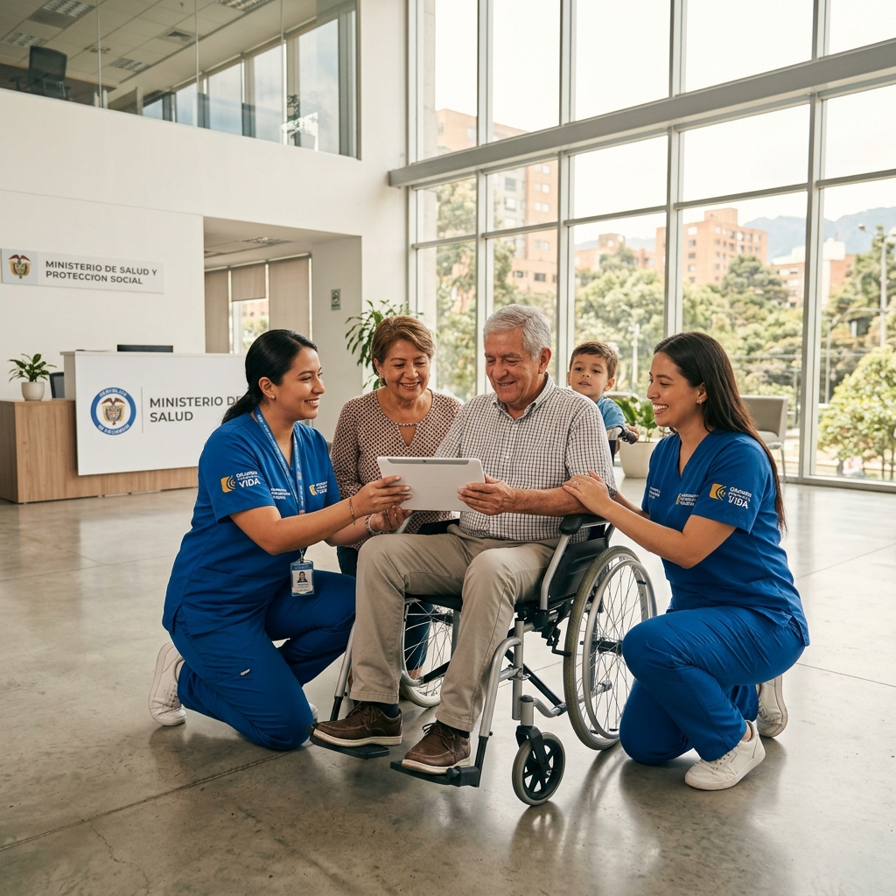
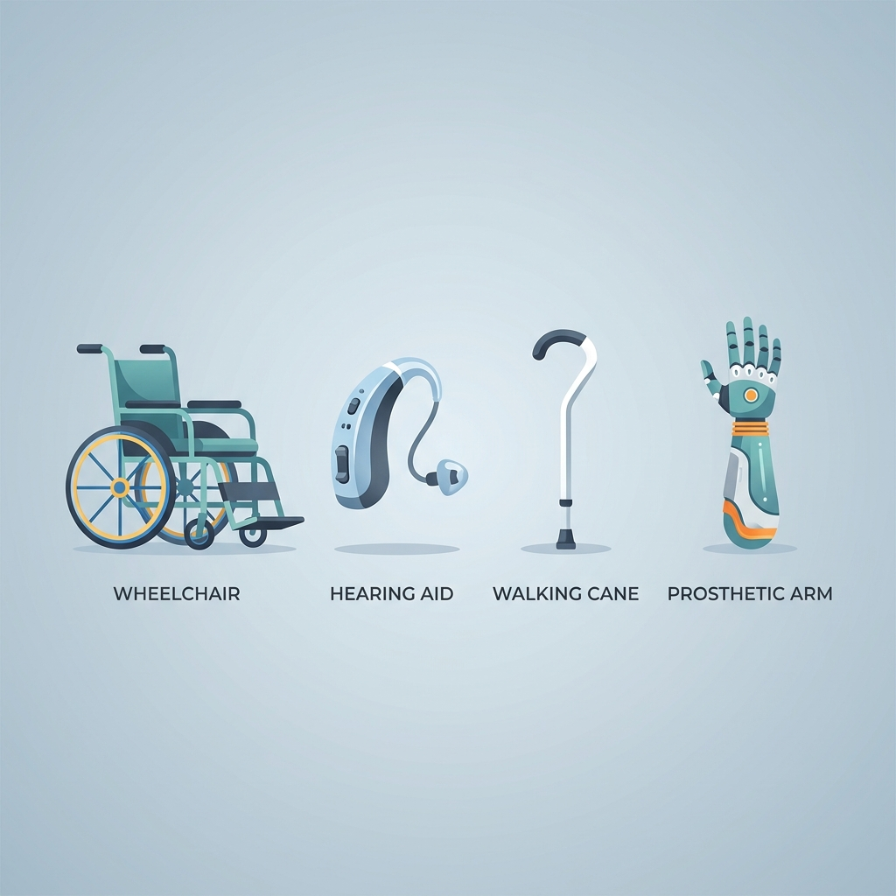

Ayudas técnicas gratuitas
para ciudadanos con discapacidad
Gestionamos la entrega de dispositivos de asistencia personal (DAP) para mejorar la independencia funcional y la calidad de vida de personas en condición de discapacidad.

Inclusión y autonomía para todos los ciudadanos
El programa de ayudas técnicas está orientado a garantizar el acceso equitativo a dispositivos de asistencia personal que no se encuentran cubiertos por el Plan de Beneficios de Salud (PBS/POS), priorizando a la población en situación de vulnerabilidad socioeconómica.
Nuestro proceso es 100% digital, gratuito y sin intermediarios. Una vez radicada su solicitud, un equipo técnico evaluará su caso y coordinará la entrega del dispositivo requerido.
Tipos de ayudas técnicas disponibles
Seleccionadas según funcionalidad, diagnóstico médico y evaluación de necesidad.
Movilidad
- Silla de ruedas manual / eléctrica
- Caminadores y andadores
- Muletas y bastones
- Ortesis y prótesis
Comunicación sensorial
- Amplificadores auditivos
- Lentes ópticos especializados
- Bastones guía para ciegos
- Dispositivos de comunicación aumentativa
Cuidado en casa
- Camas articuladas
- Sillas de baño y ducha
- Colchones anti-escaras
- Barras de apoyo y rampas
Otros dispositivos
- Grúas de transferencia
- Vertedoras y utensilios adaptados
- Equipos de bipedestación
- Adaptaciones posturales
¿Cómo funciona el trámite?
Cuatro pasos simples para obtener su ayuda técnica de forma gratuita.
Diligencie el formulario digital
Complete los 5 pasos del asistente con su información personal, diagnóstico, tipo de dispositivo requerido y documentos de soporte.
Reciba su número de radicado
Al enviar el formulario, recibirá inmediatamente un número de radicado para hacer seguimiento a su solicitud en cualquier momento.
Evaluación institucional
Un profesional de salud y un trabajador social revisarán su caso, validarán los documentos y aprobarán el tipo de dispositivo apropiado.
Entrega del dispositivo
Una vez aprobada su solicitud, coordinamos la entrega del dispositivo en el punto de atención más cercano a su domicilio.
Documentos necesarios para la solicitud
Tenga listos los siguientes documentos en formato PDF o JPG (máx. 5MB cada uno) antes de iniciar el formulario:
-
1
Documento de identidad
Cédula de ciudadanía, tarjeta de identidad o registro civil, ampliado al 150%.
-
2
Historia clínica reciente
Emitida por un profesional de salud con diagnóstico CIE-10 que justifique la necesidad del dispositivo.
-
3
Recibo de servicio público
No mayor a 3 meses. Sirve como prueba de dirección de residencia.
-
4
Certificado de afiliación a salud
EPS o ADRES vigente.
Población priorizada
- Sisbén Grupos A, B y C
- Adultos mayores (60+ años)
- Menores de edad con discapacidad
- Víctimas del conflicto armado
- Comunidades étnicas
Importante
Solo se aprueban dispositivos que NO están incluidos en el Plan de Beneficios de Salud (PBS/POS). Si su dispositivo está cubierto por su EPS, debe solicitarlo directamente a ella.
¿Listo para iniciar su solicitud?
El proceso es completamente digital y gratuito. No necesita intermediarios.